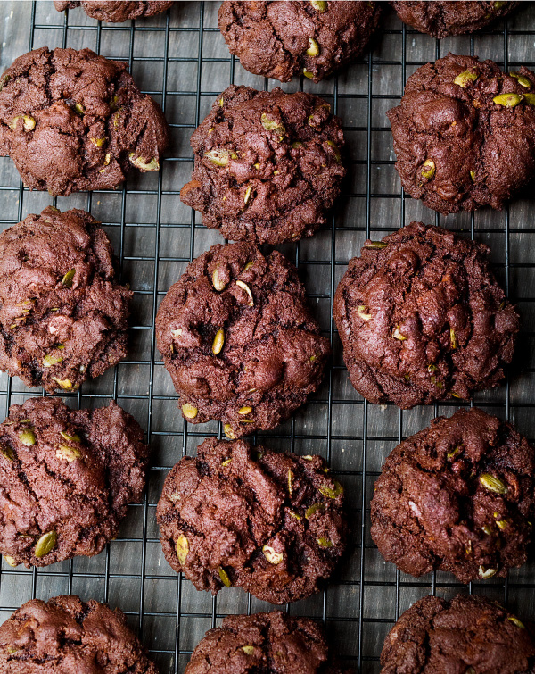

Double Chocolate and Pumpkin Seed Cookies

While there is no shortage of chocolate cookies on this site (from the Mine-all-Mine Sweet and Salty Chocolate Cookies to the Christmas Chocolate Cookies, taking in the gluten-free Triple Chocolate Buckwheat Cookies, the Chocolate Mint Cookies and, of course, the Totally Chocolate Chocolate Chip Cookies) these deep, dark, pumpkin-seed-studded beauties are a most deserving addition to your repertoire. It may sound strange to describe any cookies as chic, but there is something about their bittersweet combination of elegance and sumptuousness that earns them that accolade, despite their undeniably rough-hewn appearance.
If you like your chocolate salted — as I very much do — add somewhere between ¼ and ½ teaspoon of sea salt flakes to the cookie dough, and sprinkle another ¼-½ teaspoon sea salt over the formed cookies, just before they go into the oven. It might be wise to start with the smaller amount — not everyone has as salty a tooth as I do.
Ingredients
Makes: 18
- 75 grams soft unsalted butter
- 100 grams caster sugar
- 70 grams soft light brown sugar
- 1 large egg (at room temperature)
- 1 teaspoon vanilla extract
- 125 grams plain flour
- 50 grams cocoa (sieved if lumpy)
- 1 teaspoon bicarbonate of soda
- A pinch of fine sea salt
- 125 grams dark chocolate chips
- 50 grams pumpkin seeds
Method
- Preheat the oven to 180°C/160°C Fan/350°F. Beat together the butter and sugars until paler in colour and fluffy.
- Add the egg and vanilla and beat to combine, scraping down the bowl to rescue and incorporate any batter clinging to the sides.
- In another bowl, use a fork to mix together the flour, cocoa, bicarb and salt. Gradually add to the creamed mixture in the bowl, beating it in gently.
- With a spoon or spatula, fold in the chocolate chips and pumpkin seeds; you will have a thick, firm mixture.
- Line a couple of baking sheets with baking parchment, then, using a rounded tablespoon measure for ease, form heaped mounds, leaving about 6cm / 2½ inches space between them, easing the mixture out of the spoon with a small spatula onto the sheet. Don’t flatten them.
- Cook a batch at a time for 10–12 minutes, by which time the surface will feel just set and be cracked in parts. They will still feel pretty soft but will firm up as they cool. Once they’re out of the oven, leave on the tray for 5 minutes before transferring to a wire rack to cool a little before diving in. Or leave to cool entirely if preferred.